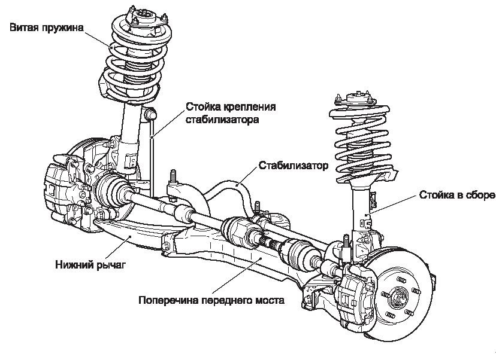

Ходовая часть автомобиля - это комплекс узлов и агрегатов, предназначенных для перемещения транспортного средства по дороге, а также для гашения колебаний, возникающих при движении по неровностям дорожного покрытия.
Является основой для крепления всех остальных элементов ходовой части. В современных легковых автомобилях обычно используется несущий кузов.
Система, соединяющая кузов (раму) автомобиля с колесами. Основные функции:
Подвеска бывает зависимой, независимой и полузависимой.
Обеспечивают непосредственный контакт автомобиля с дорожным покрытием. Шины бывают:
Конструктивные элементы, соединяющие колеса одной оси. В переднеприводных автомобилях передний мост включает в себя элементы трансмиссии.
Элементы подвески, отвечающие за гашение колебаний и поддержание постоянного контакта колес с дорогой.
Для поддержания ходовой части в хорошем состоянии рекомендуется: